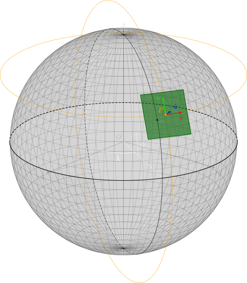

The Bistatic Synthetic Aperture Radar (BSAR) configurator aims to
provide a simple but comprehensive tool to visualize bistatic SAR system
geometric configurations together with the calculation of some useful resulting parameters. The main ojective of this tool is to provide
a configurator for the design of some future potential bistatic SAR missions. In addition to its operational objective, the BSAR configurator
tool offers a didactic approach to the SAR systems geometry in a general way with its 3D representation and the possibility to visualize the
impact of the variation of one parameter to the potential result of the final SAR image.
1.1 The BSARconf interface
The main page of the BSAR configurator allows to first, visualize in a 3D scene the transmitter and receiver
geometry defined by their carrier and antenna objects, respectively. The transmitter and receiver antenna beams
are respectively colored white and black in order to distinguish them.
The transmitter parameters can be modified by clicking the .... button on the upper left corner and the
receiver parameters can be modified by clicking the ... button on the upper right corner.
1.2 The BSARconf parameters
1.2.1 Input parameters
1.2.2 Information parameters
1.2.3 Information plots
2. PHYSICAL BACKGROUND
2.1 Geometry
2.1.1 Referential

Figure 1 - Illustration of the local ENU referential plane of point
$P$ with longitude
$\lambda$, latitude
$\phi$ and altitude
$H$ relative to the Earth ellipsoid surface.
In order to remain as general as possible, the referential plane of the bistatic SAR configurator
is taken as the local tangent East North
Up (ENU) plane relative to the point of interest $P$. Figure 1 above illustrates the local
ENU referential plane (green) relative to point of interest
$P$ at a given longitude $\lambda$, latitude $\phi$ and
altitude $H$ above the Earth referential ellipsoid. Axes $\hat{e}$,
$\hat{n}$ and $\hat{u}$ of the
local ENU referential form an orthonormal reference frame whose $\hat{e}$-axis
is tangent to the local parallel and positive toward increasing longitude,
$\hat{n}$-axis is tangent to the local meridian and positive toward
increasing latitude and $\hat{u}$-axis follows the outgoing local
normal to the Earth ellipsoid. More information about local tangent plane coordinates can be found
on the Wikipedia page:
Local tangent plane coordinates.
This referential frame centered on point of interest $P$ forms the main referential of the bistatic
SAR configurator geometry. Each geometric parameter is thus expressed relative to this referential frame
following the same color code and is illustrated on Figure 2 below. Realistic geometric configurations can
thus be used by converting them into the local ENU plane relative to the point of interest.
Each axis of the BSAR configurator referential frame have a length of 500 m and a grid helper is superimposed
in light grey spaced of 200 m in both east and
north directions. The extent of the depicted referential plane (green) is
of 30 km in each direction.
Figure 2 - Illustration of the main referential frame of the
Bistatic SAR configurator geometry. Each axis is 500 m long, the light grey grid helper
has a spacing of 200 m in both directions and the extent of the referential plane is 30 km
in both directions.
2.1.2 Carrier
2.1.3 Antenna
2.1.4 Bistatic system
2.2 BSAR resolutions and design
2.2.1 Generalized Ambiguity Function
The Bistatic SAR system response can be characterized by its BSAR bisector vector $\overrightarrow{\beta}(u_0)$ together with its corresponding first
time derivative $\dot{\overrightarrow{\beta}}(u_0)$ in the SG approximation for a point scatterer at a given slow-time $u_0$. They are expressed by, respectively:
$$\left\{
\begin{array}{rcl}
\overrightarrow{\beta}(u_0) & = & \widehat{u_{TP}}(u_0)+\widehat{u_{RP}}(u_0) \\
\dot{\overrightarrow{\beta}}(u_0) & = &
-\left[\dfrac{\overrightarrow{V_T}(u_0)-\left(\widehat{u_{TP}}(u_0)\cdot\overrightarrow{V_T}(u_0)\right)\widehat{u_{TP}}(u_0)}{R_{TP}(u_0)}+
\dfrac{\overrightarrow{V_R}(u_0)-\left(\widehat{u_{RP}}(u_0)\cdot\overrightarrow{V_R}(u_0)\right)\widehat{u_{RP}}(u_0)}{R_{RP}(u_0)}\right]
\end{array}\right.
$$
with the bistatic angle of the BSAR system derived from the BSAR bisector vector:
$$
\beta(u_0)=2\mathrm{arccos}\left(\dfrac{\left\Vert\overrightarrow{\beta}(u_0)\right\Vert}{2}\right)
$$
The complex Generalized Ambiguity Function (GAF) can thus be derived by supposing a narrowband transmitted signal, a linear flight path around slow-time $u_0$,
isotropic antennas and by neglecting the signal attenuation to distances. Calculations of this derivation are not presented here. The complex bistatic
GAF is finally given by:
$$
\chi_P(\vec{r})\simeq\mathrm{sinc}\left(B\dfrac{\overrightarrow{\beta}(u_0)\cdot\vec{r}}{c}\right)
\mathrm{sinc}\left(T_u\dfrac{\dot{\overrightarrow{\beta}}(u_0)\cdot\vec{r}}{\lambda_0}\right)
\exp\left(\mathrm{j}2\pi\frac{\overrightarrow{\beta}(u_0)\cdot\vec{r}}{\lambda_0}\right)
$$
It must be pointed out that the previous expressions of the BSAR bisector vector and its first time derivative are given in the slant
radar geometry. The ground bistatic GAF is given by:
$$
\chi_{P,g}(\vec{r})\simeq\mathrm{sinc}\left(B\dfrac{\overrightarrow{\beta_g}(u_0)\cdot\vec{r}}{c}\right)
\mathrm{sinc}\left(T_u\dfrac{\dot{\overrightarrow{\beta_g}}(u_0)\cdot\vec{r}}{\lambda_0}\right)
\exp\left(\mathrm{j}2\pi\frac{\overrightarrow{\beta_g}(u_0)\cdot\vec{r}}{\lambda_0}\right)
$$
for which vectors are expressed in the ground geometry, that is, if $\hat{n}$ is the unit local normal of the surface at point $P$
on the ground:
$$
\left\{
\begin{array}{rcl}
\overrightarrow{\beta_g}(u_0) & = & \overrightarrow{\beta}(u_0)-\left(\overrightarrow{\beta}(u_0)\cdot\hat{n}\right)\hat{n} \\
\dot{\overrightarrow{\beta_g}}(u_0) & = & \dot{\overrightarrow{\beta}}(u_0)-\left(\dot{\overrightarrow{\beta}}(u_0)\cdot\hat{n}\right)\hat{n}
\end{array}
\right.
$$
where $\overrightarrow{\beta_g}(u_0)$, respectively $\dot{\overrightarrow{\beta_g}}(u_0)$, is the rejection of vector $\overrightarrow{\beta}(u_0)$,
respectively $\dot{\overrightarrow{\beta}}(u_0)$, with respect to the unit normal $\hat{n}$. Those vectors belongs to the plane of normal $\hat{n}$.
2.2.2 Range resolution
The BSAR system range resolution can be estimated from its GAF function